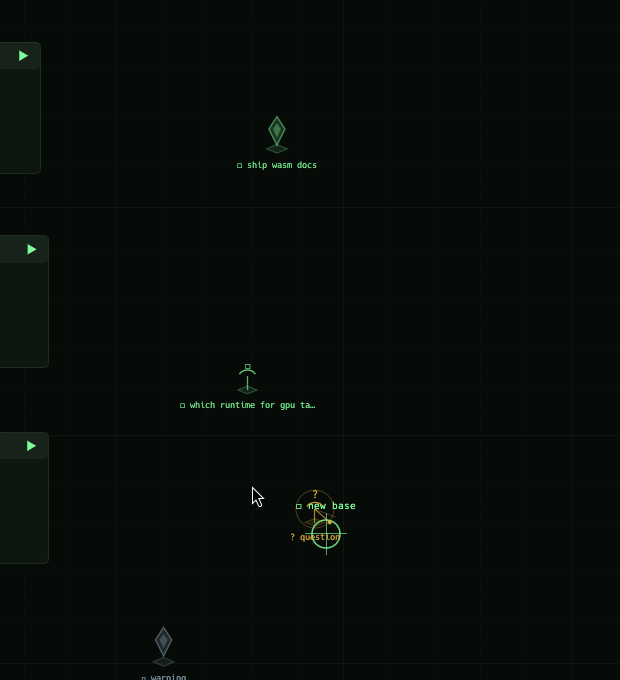

Bases are theaters; work lives around them as vector-drawn structures on the map. Every structure
belongs to a base, is placed while that base is selected, persists in space.jsonl,
and can be created and driven by wasm programs and the control API
as well as by hand. Two structure types exist today:

A pylon is a floating crystal over a ground plate — one pylon per task/goal of its base. The task's state is its power level:
| state | look |
|---|---|
todo | unpowered grey-blue crystal, slow hover, no field |
doing | bright cyan, fast bob, glow, pulsing power-field ring on the ground |
done | calm green, quiet — the goal stands |
blocked | red crystal with a flickering alarm ring |
Pylons are the same data as the card's task list (Task in src/model.rs,
now with an optional world pos) — a task upserted by a wasm reducer materializes as a
pylon in an auto slot on the arc under its base; placed or dragged pylons keep their exact spot.
A sensor array is a mast with a dish and a sweeping radar beam — one array per open question or
research thread of its base. While the question is open it scans: amber, rotating beam,
expanding ping rings, a bobbing ? above the dish. Once resolved it goes quiet
and green with a ✓. Questions live in Project.questions
(Question { text, resolved, pos }) and also appear as a list on the base card,
where clicking a row toggles resolved.
Building is a grouped command card, StarCraft-style: B arms the build submenu and
the bottom hint bar switches down to its level —
▸ BUILD · [b] base · [p] pylon — goal · [q] sensor — question · [esc] cancel —
then the second key places at the cursor.
| action | how |
|---|---|
| build anything | B to open the build menu, then B = base, P = pylon, Q = sensor array; type the name/goal/question, Enter |
| select a structure | click the pylon or sensor array — pulsing selection brackets; click empty ground or esc deselects |
| change its state | double-click into its space and use the state chips (TODO/DOING/DONE/BLOCKED, or SCANNING/RESOLVED); question rows on the base card also toggle on click |
| enter a structure's space | double-click the pylon or sensor array — its own interior room: the structure monumental in state color, clickable state chips, and the slice of the event feed that mentions it. esc or double-click the floor exits |
| reposition | drag the structure; the spot persists |
| group select | ctrl+drag a rectangle — every pylon/sensor it touches gets pulsing selection brackets and a count readout; click empty ground or esc clears |
| demolish structures | with a group selected, D D (press twice within 4s) removes them all, logged per structure in the event feed. With no group, D D still destroys the selected base |
| size ratio | the ◆ SIZE × slider in the top bar (0.6–3.0, default 1.5) scales all substructures relative to the map; persisted with the space, also settable via /cfg?struct_scale=1.5 |
| labels | shown when the parent base is selected, or always when zoomed in (scale ≥ 0.75) |
Pylons and sensor arrays still need a selected base to be placed — the structure belongs to it. A single click never mutates: it only selects (dd then demolishes; double-click enters). Substructures always win the click hit-test over base cards and captures, and their click zones cover crystal, mast, and ground plate.
Every placement, state change, and resolution is logged into the base's event feed (and therefore its "since you left" delta).
A structure's title is only its name — the short visual cue drawn on the map next to the crystal
or mast. What the pylon or question actually is lives in its brief: a free-form text surface inside
the structure's room (double-click the structure to enter). Click the panel (or press enter inside the room) to edit; it saves as you type
(notes in space.jsonl, omitted while empty). Hotkeys are muted while the editor has focus;
esc leaves the editor first, then the room. A dispatched worker receives the pylon's brief as its
"Assignment brief" alongside the title.
Clipboard. ctrl+v pastes from the host X11 clipboard and ctrl+c / ctrl+x copy into it,
even though the app runs inside a nested weston whose own wayland clipboard is isolated from the host session
(eframe only ever talks to that inner clipboard, so paste used to land nothing). The app connects to
DISPLAY, or COMMANDER_HOST_DISPLAY when the launcher strips it, defaulting to :0;
if the host display is unreachable it falls back to the compositor clipboard.
# upsert a goal pylon on base 0 (auto slot unless x/y given)
curl "localhost:7700/pylon?i=0&title=ship+wasm+docs&state=doing&x=5200&y=3060"
# set (or replace) its brief — the body behind the short title
curl "localhost:7700/pylon?i=0&title=ship+wasm+docs&state=doing¬es=cover+the+ABI+table+and+budgets"
# upsert a question sensor array
curl "localhost:7700/question?i=0&text=which+runtime+for+gpu+tasks%3F"
# resolve it later
curl "localhost:7700/question?i=0&text=which+runtime+for+gpu+tasks%3F&resolved=1"
# questions take a brief too (notes=..); reducer ops task/question accept "notes" as well
# headless editing of a brief: enter the room, focus the editor, type / paste
curl "localhost:7700/key?k=Enter"; curl "localhost:7700/text?s=hello"
curl "localhost:7700/key?k=V&ctrl=1" # paste the host clipboard (ctrl=1 = ctrl chord; A/C/X work too)
# observe: tasks and questions with world positions
curl localhost:7700/state | jq '.projects[0] | {tasks, questions}'
Modules drive structures through reducer commands:
task / task_remove for pylons and question /
question_remove for sensor arrays, each accepting optional x/y
world coordinates. A monitoring module can raise a red blocked pylon when a probe fails, flip it
green when the endpoint recovers, or open a question when it sees something it cannot classify.